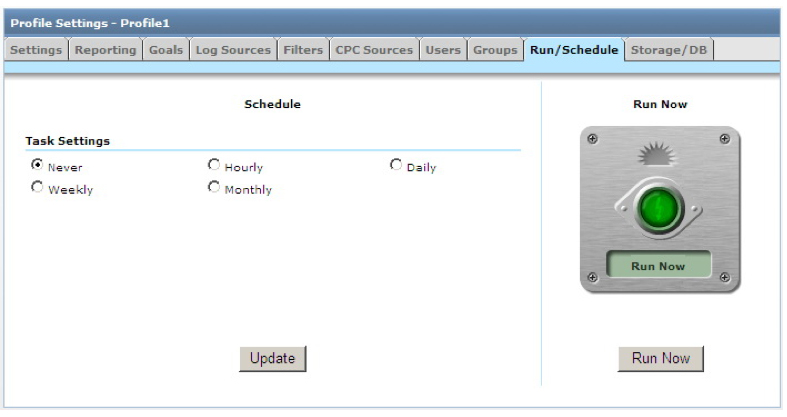
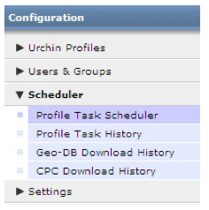

Como trabalhar com o Agendador de Tarefas
Visão geral
O Agendador de Tarefas é a base do Urchin -- ele é responsável pelo agendamento e pela execução reais dos eventos de processamento de registros do Urchin para todos os Perfis. No Agendador, é possível executar tarefas imediatamente ou adicioná-las à lista de eventos do Urchin para execução repetida praticamente em qualquer intervalo desejado.
Como usar o Agendador
- Faça login no Urchin 6 e clique em Configuração (no canto superior direito da interface).
- Localize o Perfil que você deseja agendar e clique em Editar.
- Clique na guia Executar/Agendar.
- Em Configurações de tarefa, selecione o intervalo desejado. Um intervalo diário é recomendado.
- Defina a hora do dia para a tarefa.
- Clique em Atualizar para salvar as alterações.
- Para executar a tarefa imediatamente, clique em Executar agora. As tarefas subsequentes agendadas ocorrerão de acordo com o agendamento que você tiver definido.

Recomendações
- A maioria das tarefas deve ser agendada para execução diária, já que esse é o agendamento de renomeação de registro de muitos servidores da web. Entretanto, o recurso de acompanhamento de registro do Urchin torna possível a leitura do mesmo registro várias vezes sem duplicar os dados e, sendo assim, essa frequência não é necessária.
Observações sobre a operação do Agendador
- Todas as tarefas são tratadas sequencialmente pelo Urchin e, dessa forma, várias tarefas com o mesmo tempo de execução ainda serão processadas individualmente.
- Para ver os resultados de todas as tarefas que foram executadas, selecione Agendador e, em seguida, Histórico de tarefas, na navegação à esquerda.

Seções do Agendador:
- Agendador de tarefas de perfil - O objetivo dessa tela é exibir as tarefas que são agendadas para serem executadas para cada Perfil na configuração. Vários detalhes são mostrados para cada perfil, incluindo o Nome do perfil, a frequência de execução, o Status de execução (Não agendado, Pendente, Em fila, Em execução) e, para as tarefas em execução, o percentual de conclusão e o horário de início da Tarefa.
- Histórico de tarefas de perfil – Esta tela relaciona o histórico de cada Tarefa que foi executada por meio do Agendador de tarefas de perfil ou do botão Executar agora. É relacionado um resumo das Tarefas, fornecendo informações valiosas sobre cada uma. Para visualizar os detalhes de tempo de execução da tarefa de histórico, clique no campo Status.
Histórico de downloads do banco de dados geográfico (Urchin 6.500+) – Anteriormente chamado de geoupdate, essa seção fazia parte do Agendador de tarefas de perfil. Esta seção do agendador exibe todos os downloads do banco de dados geográficos realizados através do Agendador de tarefas de perfil. Um resumo de downloads é relacionado fornecendo informações valiosas sobre cada download. Para visualizar os detalhes de tempo de execução da tarefa de histórico, clique no campo Status. O download do banco de dados geográfico pode ser agendado em Configurações -> Configurações globais -> Atualização dos dados geográficos. Você também pode modificar o agendador de CPC na seção de Configurações -> Configurações globais -> Atualização de origem de CPC.
Histórico de Download de CPC (Urchin 6.500+) – O objetivo dessa tela é relacionar o histórico de cada tarefa de download de CPC que tenha sido realizada pelo Agendador de tarefas de CPC. Um resumo de downloads de CPC é relacionado fornecendo informações valiosas sobre cada download. Para visualizar os detalhes de tempo de execução da tarefa de histórico, clique no campo Status. O download de origem de CPC pode ser agendado para download de duas maneiras – a partir da visualização do Gerenciador de origens de CPC (Gerenciador de origens de CPC -> Download ou Editar-> guia Agendar -> escolha o agendamento.de download ou force o download clicando no botão de Fazer download agora).